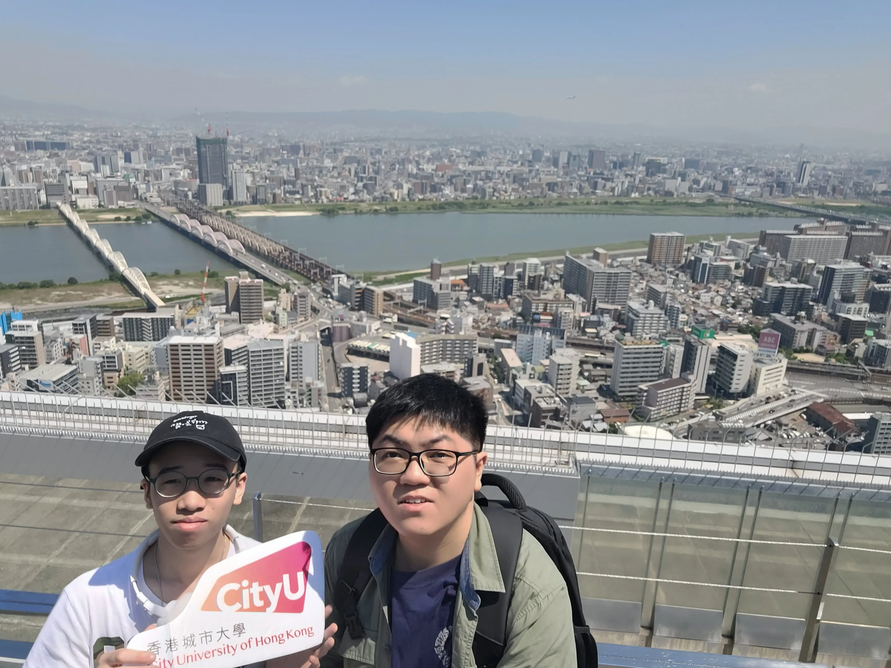
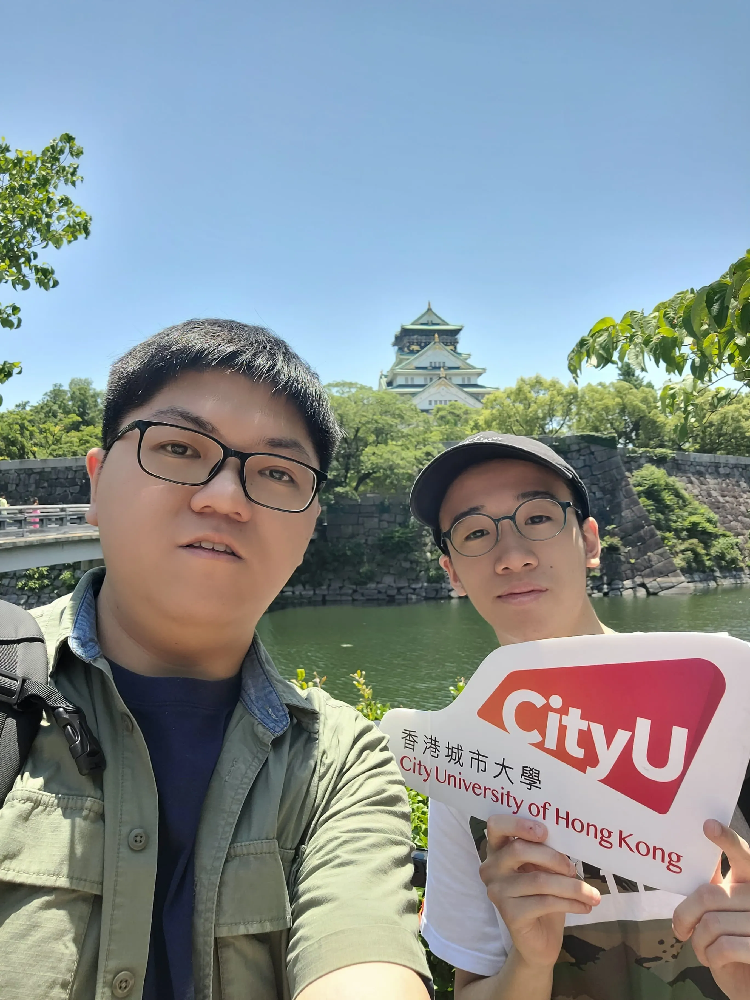
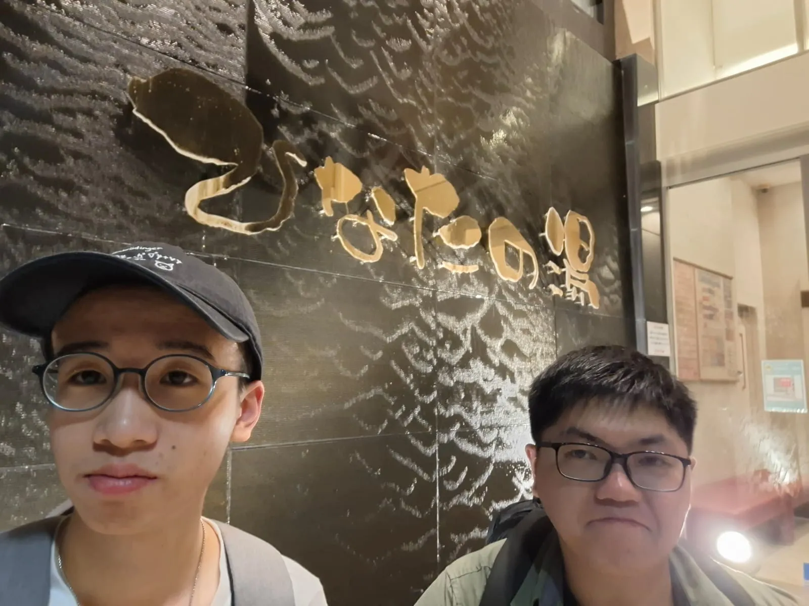

One-day Tour of Osaka Attractions
At nine in the morning, we set off from Namba, Osaka, and headed to the Sky Garden at Umeda Sky Building. The building consists of two 173-meter-tall towers connected by an open-air observation deck, that is, the Sky Garden. Luckily, the weather was perfect, offering a stunning full view of Osaka.
Next, we visited Osaka Castle, a historic fortress built in the 16th century by Toyotomi Hideyoshi. We bought boat tickets to cruise around the moat, soaking in the historic atmosphere and scenic views.
After that, we went to Shitennoji Temple, the oldest officially administered temple in Japan, founded by Prince Shotoku in 593. Nestled in the heart of the city, the temple’s two main pagodas align perfectly with the distant skyscrapers, creating a striking blend of tradition and modernity.
Then, we travelled to the Sakishima Cosmo Tower Observatory, one of the most breathtaking experiences during our exploration day. We took the metro to Train Center Mae Station, excitedly chatting about what awaited us. As we ascended to the observatory, the anticipation grew. Standing at 252 meters above ground, we were treated to a stunning 360-degree view of Osaka Bay. The vastness of the sea and the distant silhouette of the Akashi Kaikyo Bridge left us in awe. The deck's floor-to-ceiling windows made it feel as if we were floating above the city, and looking down at the tiny cars and people was exhilarating.
Later that evening, we headed to Hinata no Yu, a natural hot spring located near Shin-Osaka Station. The transition from the bustling city to the tranquil hot springs was refreshing. We soaked in the open-air baths, enjoying the serene views of Osaka while relaxing in the soothing water. The experience was the perfect way to unwind after a day of exploration, and we all agreed the hot spring had a magical quality that made us feel rejuvenated.
